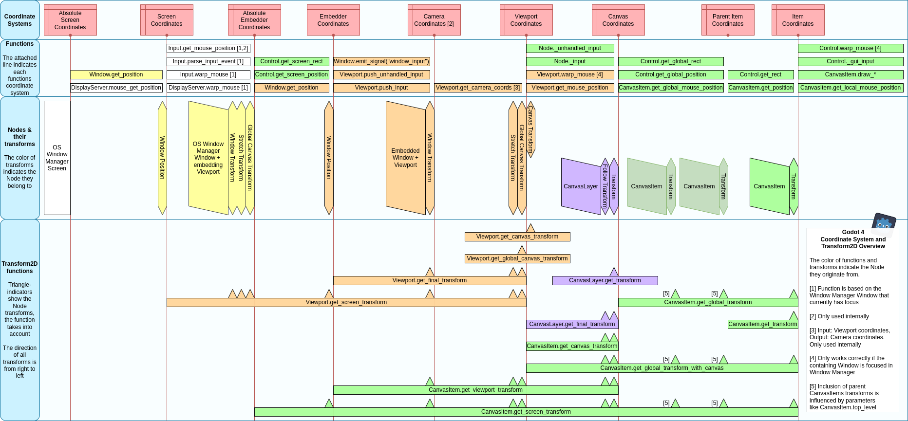

Hệ tọa độ 2D và phép biến đổi 2D
Giới thiệu
Đây là phần tổng quan chi tiết về các hệ tọa độ 2D và phép biến đổi (transform) 2D có sẵn. Các khái niệm cơ bản được trình bày trong Transform của viewport và canvas.
Transform2D là các ma trận chuyển đổi tọa độ từ hệ tọa độ này sang hệ tọa độ khác. Để sử dụng chúng, bạn nên biết Godot có những hệ tọa độ nào. Để hiểu sâu hơn, bài hướng dẫn Ma trận và transform cung cấp cái nhìn về cơ chế hoạt động bên dưới.
Các hệ tọa độ 2D của Godot
Hình dưới đây cho cái nhìn tổng quan về các hệ tọa độ 2D của Godot cùng các phép biến đổi của node, các hàm biến đổi và các hàm liên quan đến hệ tọa độ. Bên trái là màn hình của OS Window Manager, bên phải là các CanvasItems. Để đơn giản, hình này không bao gồm SubViewport, SubViewportContainer, ParallaxLayer và ParallaxBackground, dù tất cả chúng cũng ảnh hưởng đến các phép biến đổi.
Hình được dựa trên một cây node có dạng sau: Root Window (embed Windows) ⇒ Window (don't embed Windows) ⇒ CanvasLayer ⇒ CanvasItem ⇒ CanvasItem ⇒ CanvasItem. Có thể có những tổ hợp phức tạp hơn, như Window và SubViewport lồng nhau nhiều cấp, tuy nhiên ví dụ này nhằm cung cấp cái nhìn tổng quan về phương pháp nói chung.


Nhấp vào hình để phóng to.
- Tọa độ item (Item Coordinates)
Đây là hệ tọa độ cục bộ của một CanvasItem.
- Tọa độ item cha (Parent Item Coordinates)
Đây là hệ tọa độ cục bộ của CanvasItem cha. Khi định vị các CanvasItems trong Canvas, chúng thường kế thừa các phép biến đổi của CanvasItems cha. Một ngoại lệ là CanvasItems.top_level.
- Tọa độ canvas (Canvas Coordinates)
Như đã đề cập trong bài hướng dẫn trước Canvas layer, có hai loại canvas (canvas của Viewport và canvas của CanvasLayer) và cả hai đều có hệ tọa độ canvas. Chúng còn được gọi là tọa độ thế giới (world coordinates). Một Viewport có thể chứa nhiều Canvases với các hệ tọa độ khác nhau.
- Tọa độ viewport (Viewport Coordinates)
Đây là hệ tọa độ của Viewport.
- Tọa độ camera (Camera Coordinates)
Hệ tọa độ này chỉ được dùng nội bộ cho các chức năng như phép chiếu tia của camera 3D.
- Tọa độ embedder / Tọa độ màn hình (Embedder Coordinates / Screen Coordinates)
Mỗi Viewport (Window hoặc SubViewport) trong scene tree được nhúng (embed) vào một node khác hoặc vào OS Window Manager. Gốc của hệ tọa độ này trùng với góc trên bên trái của Window hoặc SubViewport, và tỉ lệ của nó là tỉ lệ của embedder hoặc của OS Window Manager.
Nếu embedder là OS Window Manager, chúng còn được gọi là tọa độ màn hình (Screen Coordinates).
- Tọa độ embedder tuyệt đối / Tọa độ màn hình tuyệt đối (Absolute Embedder Coordinates / Absolute Screen Coordinates)
Gốc của hệ tọa độ này là góc trên bên trái của node nhúng hoặc của màn hình OS Window Manager. Tỉ lệ của nó là tỉ lệ của embedder hoặc của OS Window Manager.
Nếu embedder là OS Window Manager, chúng còn được gọi là tọa độ màn hình tuyệt đối (Absolute Screen Coordinates).
Transform của node
Mỗi node nêu trên có một hoặc nhiều phép biến đổi gắn với nó, và sự kết hợp của các node này xác định các phép biến đổi giữa những hệ tọa độ khác nhau. Trừ một vài ngoại lệ, các phép biến đổi đều là Transform2D, và danh sách sau trình bày chi tiết cùng tác dụng của từng phép biến đổi.
- Transform của CanvasItem
CanvasItems là các node Control hoặc các node Node2D.
Với các node Control, phép biến đổi này gồm một vị trí tương đối so với gốc của node cha, cùng tỉ lệ và góc xoay quanh một điểm trục.
Với các node Node2D, transform gồm position, rotation, scale và skew.
Phép biến đổi này ảnh hưởng đến chính item và thường cả các CanvasItems con; trong trường hợp SubViewportContainer, nó ảnh hưởng đến SubViewport được chứa bên trong.
- Transform của CanvasLayer
transform của CanvasLayer ảnh hưởng đến tất cả CanvasItems bên trong CanvasLayer. Nó không ảnh hưởng đến các CanvasLayers hoặc Windows khác trong Viewport của nó.
- Follow viewport transform của CanvasLayer
Follow viewport transform là một phép biến đổi được tính toán tự động, dựa trên canvas transform của Viewport và follow viewport scale của CanvasLayer, và có thể được dùng, nếu được bật, để tạo hiệu ứng giả 3D. Nó ảnh hưởng đến cùng các node con như CanvasLayer transform.
- Canvas transform của Viewport
canvas transform ảnh hưởng đến tất cả CanvasItems trong canvas mặc định của Viewport. Nó cũng ảnh hưởng đến các CanvasLayers có bật follow viewport transform. Camera2D đang hoạt động của Viewport hoạt động bằng cách thay đổi phép biến đổi này. Nó không ảnh hưởng đến các Windows được nhúng trong Viewport này.
- Global canvas transform của Viewport
Viewports cũng có một global canvas transform. Đây là phép biến đổi chủ, ảnh hưởng đến tất cả các phép biến đổi của từng Canvas Layer và Window được nhúng. Nó chủ yếu được dùng trong CanvasItem Editor của Godot.
- Stretch transform của Viewport
Cuối cùng, Viewports có một stretch transform, được dùng khi thay đổi kích thước hoặc kéo giãn viewport. Phép biến đổi này được dùng cho Windows như mô tả trong Đa độ phân giải, nhưng cũng có thể được đặt thủ công trên SubViewports thông qua size và size_2d_override. translation, rotation và skew của nó luôn là giá trị mặc định, và nó chỉ có thể có scale khác mặc định.
- Transform của Window
Để co giãn và định vị nội dung của Window như mô tả trong Đa độ phân giải, mỗi Window chứa một window transform. Ví dụ, nó chịu trách nhiệm cho các dải đen ở hai bên Window để Viewport được hiển thị với tỉ lệ khung hình cố định.
- Vị trí của Window
Mỗi Window cũng có một position để mô tả vị trí của nó bên trong embedder. Embedder có thể là một Viewport khác hoặc OS Window Manager.
- Shrink transform của SubViewportContainer
stretch cùng với stretch_shrink quy định cho một SubViewportContainer rằng SubViewport bên trong có được co giãn hay không và theo hệ số nguyên nào so với kích thước của container.